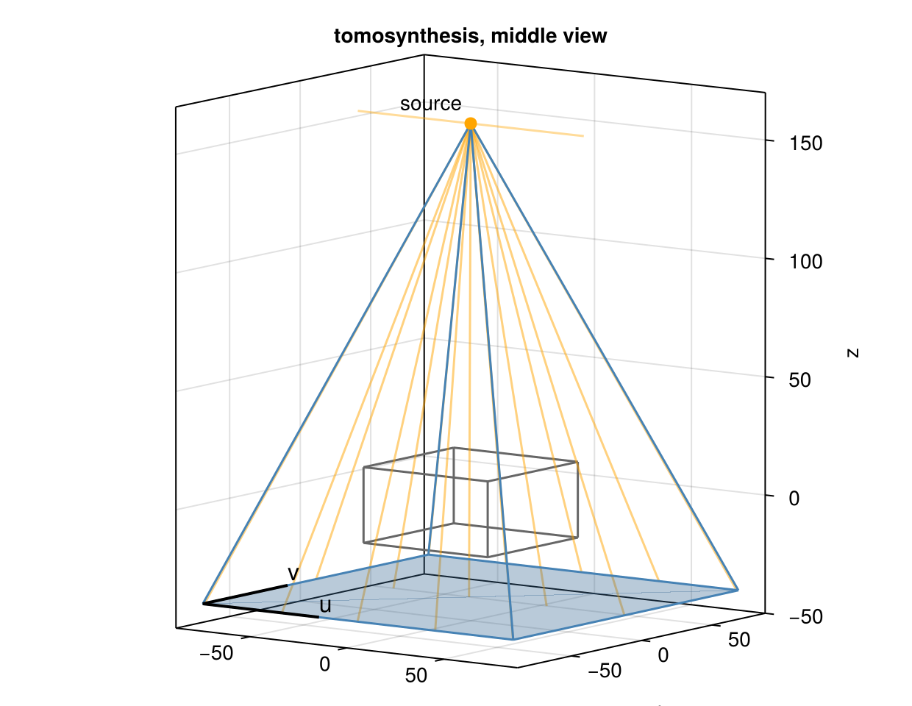
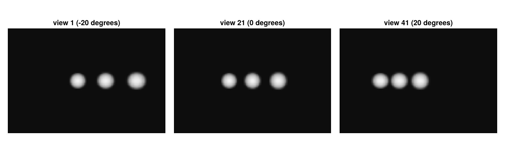
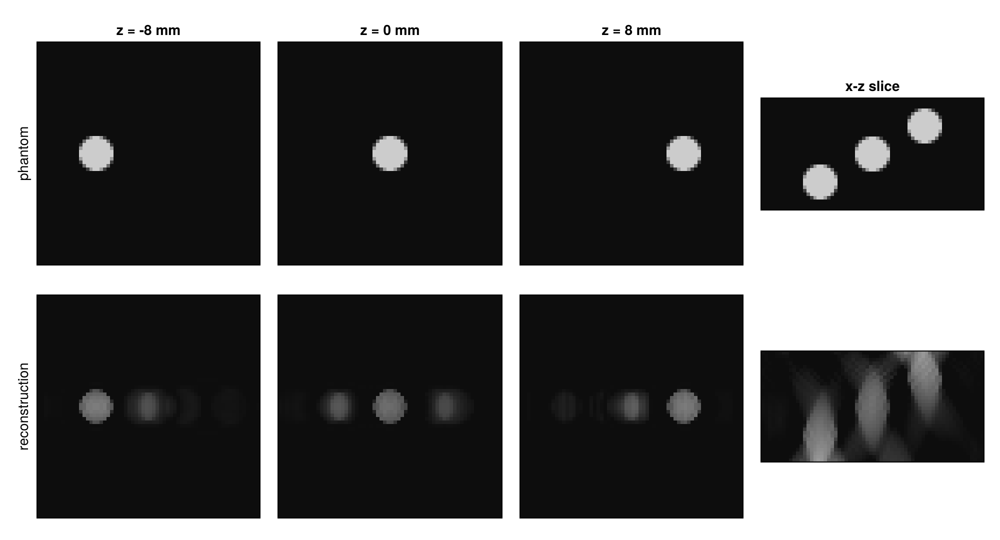

Tomosynthesis
Not every scanner rotates. In digital tomosynthesis, used in mammography and chest imaging, the detector stays fixed below the object and the source moves along a short path above it. This tutorial builds such a geometry view by view, a ConeBeam with any trajectory, and shows what the small angular range does: sharp slices parallel to the detector, but little resolution in depth.
using CTOperators, ImagePhantoms, RegularizedLeastSquares, CairoMakie
using ImageGeoms: axisdepth_figure (generic function with 1 method)The object
A slab of 64 × 64 × 32 voxels of 1 mm, the z axis pointing from the detector to the source. Three balls of radius 5 mm lie side by side along x, at three depths: z = -8, 0 and 8 mm.
image = ImageGeom(; dims=(64, 64, 32), deltas=(1.0, 1.0, 1.0))
balls = [ellipsoid((x, 0, z), (5, 5, 5), (0, 0, 0), 1.0) for (x, z) in ((-15, -8), (0, 0), (15, 8))]
x_true = Float32.(phantom(axis(image, 1), axis(image, 2), axis(image, 3), balls, 2));The scan
The detector, 160 × 160 cells of 1 mm, lies in the plane z = -40 mm, its rows along x. The source moves along x at the height z = 160 mm, 41 views between -20 and 20 degrees seen from the centre of the object. A ConeBeam takes the source position, the detector centre and the detector directions of every view, as the columns of 3 × nviews matrices:
angles = range(-deg2rad(20), deg2rad(20), 41)
m = length(angles)
source = reduce(hcat, [[160 * tan(a), 0.0, 160.0] for a in angles])
centre = repeat([0.0, 0.0, -40.0], 1, m)
u = repeat([1.0, 0.0, 0.0], 1, m)
v = repeat([0.0, 1.0, 0.0], 1, m)
geometry = ConeBeam(source, centre, u, v; nu=160, nv=160)ConeBeam{Float64}: 41 views, detector of 160 x 160 cells, stored in ArrayThe middle view: the source (orange dot) on its path (orange line), the cone of rays through the slab to the detector below.

Data and reconstruction
The middle view shows the three balls side by side; the side views shift them against each other, the more the farther a ball is from the detector. This parallax carries the depth information.
op = JosephProjector(image, geometry)
y = op * x_true
20 CGNR iterations:
x = reshape(solve!(createLinearSolver(CGNR, op; iterations=20), vec(y)), size(x_true));Slices parallel to the detector at the depths of the three balls, and the x-z slice through their centres (z up):

In each slice the ball at that depth is sharp, and the others appear as faint, blurred copies. In the x-z slice the balls are stretched along z: with rays from only 40 degrees, a structure is located well across the rays but poorly along them. The depth resolution improves with the angular range of the source; a full turn is computed tomography.
The same construction, per view source, detector centre and directions, covers any other scanner that does not rotate about an axis: robotic C-arms, inverse geometries with several sources, or a moving object in front of a fixed scanner (see Set up a geometry).
This page was generated using Literate.jl.